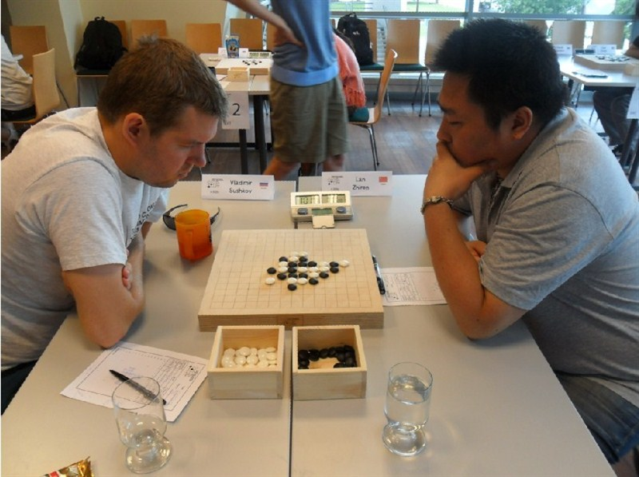

在刚刚结束的13届世锦赛第八、第九轮的角逐中，中国名将曹冬分别战胜迪米特雷和巴维尔，两日比赛拿下四连胜共积5分，重新回到了第二集团，如剩下两轮能全胜，仅有保组的可能，但已没有拿牌的机会，中国的另外一名棋手兰志仁在第八轮暴力逼和俄罗斯棋手苏切科夫，却在第九轮的一盘瑞星中犯下低级错误，不敌日本棋手大角友希，世锦赛唯一的女棋手汪清清在第八轮陷入了迪米特雷的研究，在寒星5打中早早的落了后手，最后遗憾失局。第九轮，正在发烧的汪清清利用对手对云月局的不熟悉，仅用17手就完成了对巴维尔的猎杀，完成了今日中国战队的一个小小的逆袭，给了自己很好的休息机会。
其它国家方面，小将马丁今日又显巨人杀手本色，仅使用25手就将苏切科夫斩于马下，使苏切的夺冠几乎成为了不可能。而坦克又是两战两胜，目前积8.5分，令第二名积6.5分的大角友希望尘莫及，坦克在最后两轮中只需一盘和棋，就可确保将金牌收入囊中。而目前比分排名第二的大角有希如想夺冠，不但需要后两轮全胜，还要寄希望于坦克在后两轮中不能有进帐，并且在此条件下，还需要与坦克比拼小分才能决定冠军的归属。而日本新生代棋手冈部宽今日在对战中不敌坦克并且被爱伏逼和，退出了奖牌的争夺。而另外一台有冲金希望的中华台北棋手陈科瀚今天也只拿到半分，积5.5分，也几乎退出了奖牌的争夺。

图为兰志仁与苏切科夫的对战中
世锦赛明天将进行第10轮的比赛，本来很看好的坦克与苏切之战却成了坦克的夺金战和苏切的保牌战，而现在另外一个有冠军资格的棋手大角有希明天将面对巨人杀手，16岁的小将马丁。中国棋手曹冬将对阵日本的新生代代表冈部宽，兰志仁对阵迪米特雷，而汪清清将对付老朋友爱伏。
由于今天renju.net服务器断电，造成了今天下午一轮的比赛停止直播，在此，向广大棋表示万分歉意。同时，在此再次建议棋友，直接访问爱五子棋网谱库观看直播，把renju.net的通道留给我们直播员，明天下午2点15分将直播第10轮的比赛，李一、黄圣明、祁观等国内知名棋手将参于评棋，欢迎大家到时观看。
［ 梧桐风同学于 2013-8-13 0:35:42 时花20金币送鲜花一朵］
［ 梧桐风同学于 2013-8-13 0:35:42 时花20金币送鲜花一朵］
［ 梧桐风同学于 2013-8-13 0:35:42 时花20金币送鲜花一朵］
［ 梧桐风同学于 2013-8-13 0:35:42 时花20金币送鲜花一朵］
［ 梧桐风同学于 2013-8-13 0:35:42 时花20金币送鲜花一朵］
［ 梧桐风同学于 2013-8-13 0:35:42 时花20金币送鲜花一朵］
［ 我靠我靠同学于 2013-8-13 0:50:10 时花50金币砸了你一个臭鸡蛋］
［ 踵酃同学于 2013-8-13 8:54:09 时花20金币送鲜花一朵］
［ 一夜晴同学于 2013-8-13 10:45:32 时花20金币送鲜花一朵］
［ 一夜晴同学于 2013-8-13 10:45:32 时花20金币送鲜花一朵］
［ 一夜晴同学于 2013-8-13 10:45:32 时花20金币送鲜花一朵］
［ 一夜晴同学于 2013-8-13 10:45:32 时花20金币送鲜花一朵］
［ 一夜晴同学于 2013-8-13 10:45:32 时花20金币送鲜花一朵］
引用：估计你们没有报道他所钟爱的狗猫哭比赛结果。。。
原文由 屏蔽 发表于 2013-8-13 8:42:03 :
根据我的分析，我靠我靠似乎对所有提前公布比赛结果的行为都有抵触……
引用：我也纳闷呢。。。。。。
原文由 一休哥 发表于 2013-8-13 2:50:12 :
为啥会被砸个鸡蛋咧……